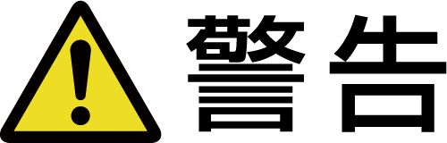
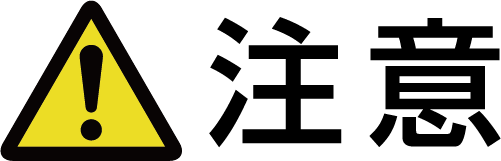
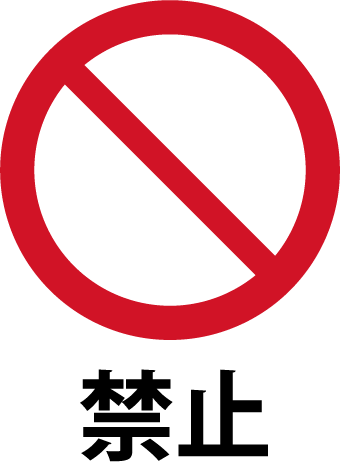

安全上のご注意
安全についての表示とその意味
本製品を安全にお使いいただくために、必ず守っていただきたい事項を下記の表示と図記号を使って記載しています。
表示と図記号の意味は以下の通りです。
表示
 |
この表示を無視して、誤った取扱いをすると、人が死亡または重傷を負う可能性が想定される内容を示しています。 |
 |
この表示を無視して、誤った取扱いをすると、人が傷害を負う可能性が想定される内容および物的損害の発生が想定される内容を示しています。 |
図記号
|
 |
禁止の行為であることを告げるものです。 |
|
|
行為を強制したり指示する内容を告げるものです。 |
作業者の安全対策
|
|
|
|---|---|
|
|
加工時は以下のような重大な傷害や損害が起きる恐れがあります。予防策を講じるとともに、十分注意して作業を行ってください。
|
|
|
作業前確認で問題がなくても、使用途中に振動等の異常が生じた場合は、直ちに使用を中止してください。 |
|
|
ツール先端部は定点で長時間加工すると高熱となり、線材の抜けや折損により、作業者が失明・怪我をする恐れがあります。高熱にならないように加工部位の加工時間の調整を行ってください。また、使用後に加工部位を直接手で触れないようにしてください。 |
|
|
加工条件の使用範囲外で使用しないでください。 |
|
|
ワークと本製品の干渉に注意して切込み量の調整を行ってください。 |

保護具の着用
保護メガネ・保護マスク・保護手袋・防音用イヤーマフ等の保護具を必ず着用して作業を行ってください。また、長袖服等肌を出さない服を着用し、袖口・裾をきちんと閉じてください。
研削粉の処理
作業中に発生する破片や研削粉等は、周囲に飛散します。集塵機等により集塵を確実に行ってください。
作業場周辺への注意
- 作業場周辺に作業者以外が⽴ち⼊らない囲いを設置し、作業場周辺の⽅も保護具や肌を出さない服を着⽤してください。
- 埃や研削粉・油・⽔などで滑ったりつまずいたりする危険を避けるため、作業場の床は常にきれいに保ってください。
- 本製品の使⽤により、加熱・⽕花などが原因で⽕災が発⽣する恐れがあります。引⽕性の液体の近くや爆発性雰囲気の下では使⽤しないでください。また、作業場では必ず防⽕対策を⾏ってください。
作業前確認
機械に本製品を取り付けた時は、機械や本製品取り付け部に緩み、振れ等の異常が無いことを確認し、その後に試加工を実施してください。
また、本番加工前にも再度異常がないことを確認してください。
工作機械等への装着時のご注意
|
|
|
|---|---|
|
|
各加工装置に装着する際は、使用する加工装置もしくは角シャンク固定用ホルダの使用方法に従ってください。 |
精密加工装置等でご使用の場合は、研削粉が装置摺動部に悪影響を与える恐れがあります。研削粉の集塵及び洗浄を確実に行ってください。
-
取付け時は、シャンク高さとシャンク幅に合った角シャンク固定用ホルダをご使用ください。
回転速度を制御できる加工装置に装着してご使用ください。